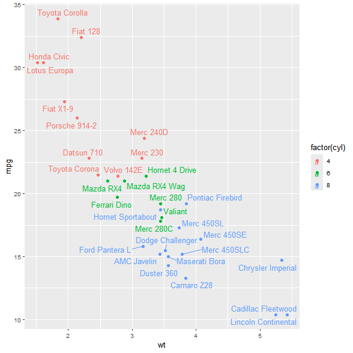
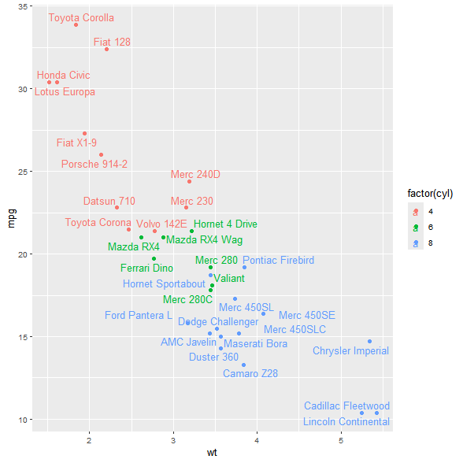

My take at a frequently asked question: “How can you recover the positions calculated by a ggrepel layer?”
library(ggplot2)
library(ggrepel)
p <- ggplot(mtcars,
aes(wt, mpg, label = rownames(mtcars), colour = factor(cyl))) +
geom_point() +
geom_text_repel(seed = 1)
p

Not available at ggplot_build(). At this point, x and y are the un-transformed data values, identical to the original data columns:
repel_layer_data <- layer_data(p, 2L)
all.equal(
mtcars[, c("wt", "mpg")],
repel_layer_data[, c("x", "y")],
check.attributes = FALSE,
use.names = FALSE
)
#> [1] TRUE
A layer’s grob (à la layer_grob()) is a list of grobs, one for each panel. That’s why we’re working with a length-1 list here.
Also not available at ggplot_gtable(), where a placeholder grob exists for the layer but no labels have been materialized yet:
repel_layer_grob <- layer_grob(p, 2L)
repel_layer_grob[[1]]
#> textrepeltree[geom_text_repel.textrepeltree.103]
repel_layer_grob[[1]]$children
#> ()
Calculated positions ARE available upon rendering, at grid.draw(). The elements drawn onto the current device can be inspected using grid.ls().
For ggplots, a prior call to grid.force() is necessary to make visible graphical objects which are computed at draw time.
library(grid)
plot(p) # Plot suppressed here for space
grid.force()
grid.ls()
#> layout
#> background.1-13-16-1
#> plot.background..rect.172
#> panel.9-7-9-7
#> panel-1.gTree.122
#> grill.gTree.120
#> panel.background..rect.118
#> panel.grid.minor.y..polyline.110
#> panel.grid.minor.x..polyline.112
#> panel.grid.major.y..polyline.114
#> panel.grid.major.x..polyline.116
#> NULL
#> geom_point.points.105
#> geom_text_repel.textrepeltree.107
#> segmentrepelgrob12
#> segment
#> segmentrepelgrob14
#> segment
#> segmentrepelgrob29
#> segment
#> textrepelgrob1
#> textrepelgrob2
#> textrepelgrob3
#> textrepelgrob4
#> textrepelgrob5
#> textrepelgrob6
#> textrepelgrob7
#> textrepelgrob8
#> textrepelgrob9
#> textrepelgrob10
#> textrepelgrob11
#> textrepelgrob12
#> textrepelgrob13
#> textrepelgrob14
#> textrepelgrob15
#> textrepelgrob16
#> textrepelgrob17
#> textrepelgrob18
#> textrepelgrob19
#> textrepelgrob20
#> textrepelgrob21
#> textrepelgrob22
#> textrepelgrob23
#> textrepelgrob24
#> textrepelgrob25
#> textrepelgrob26
#> textrepelgrob27
#> textrepelgrob28
#> textrepelgrob29
#> textrepelgrob30
#> textrepelgrob31
#> textrepelgrob32
#> NULL
#> panel.border..zeroGrob.108
#> spacer.10-8-10-8
#> NULL
#> spacer.10-6-10-6
#> NULL
#> spacer.8-8-8-8
#> NULL
#> spacer.8-6-8-6
#> NULL
#> axis-t.8-7-8-7
#> NULL
#> axis-l.9-6-9-6
#> GRID.absoluteGrob.131
#> NULL
#> axis
#> axis.1-3-1-3
#> GRID.titleGrob.130
#> GRID.text.129
#> axis.1-6-1-6
#> GRID.polyline.128
#> axis.1-1-1-1
#> NULL
#> axis-r.9-8-9-8
#> NULL
#> axis-b.10-7-10-7
#> GRID.absoluteGrob.127
#> NULL
#> axis
#> axis.1-1-1-1
#> GRID.polyline.123
#> axis.4-1-4-1
#> GRID.titleGrob.126
#> GRID.text.124
#> axis.6-1-6-1
#> NULL
#> xlab-t.7-7-7-7
#> NULL
#> xlab-b.11-7-11-7
#> axis.title.x.bottom..titleGrob.135
#> GRID.text.132
#> ylab-l.9-5-9-5
#> axis.title.y.left..titleGrob.138
#> GRID.text.136
#> ylab-r.9-9-9-9
#> NULL
#> guide-box-right.9-11-9-11
#> guide-box
#> legend.box.background.2-4-4-2
#> NULL
#> guides.3-3-3-3
#> layout
#> background.1-6-8-1
#> legend.background.rect.140
#> title.2-4-2-3
#> guide.title.titleGrob.145
#> GRID.text.143
#> key-1-1-bg.3-3-3-3
#> GRID.gTree.159
#> legend.key.rect.142
#> GRID.points.155
#> GRID.titleGrob.158
#> GRID.text.156
#> key-3-1-bg.5-3-5-3
#> GRID.gTree.163
#> legend.key.rect.142
#> GRID.points.160
#> GRID.titleGrob.162
#> GRID.text.161
#> key-5-1-bg.7-3-7-3
#> GRID.gTree.167
#> legend.key.rect.142
#> GRID.points.164
#> GRID.titleGrob.166
#> GRID.text.165
#> label-1-2.3-4-3-4
#> guide.label.titleGrob.148
#> GRID.text.146
#> label-3-2.5-4-5-4
#> guide.label.titleGrob.151
#> GRID.text.149
#> label-5-2.7-4-7-4
#> guide.label.titleGrob.154
#> GRID.text.152
#> guide-box-left.9-3-9-3
#> NULL
#> guide-box-bottom.13-7-13-7
#> NULL
#> guide-box-top.5-7-5-7
#> NULL
#> guide-box-inside.9-7-9-7
#> NULL
#> subtitle.4-7-4-7
#> plot.subtitle..zeroGrob.169
#> title.3-7-3-7
#> plot.title..zeroGrob.168
#> caption.14-7-14-7
#> plot.caption..zeroGrob.170
I use the term “computed at draw time” to loosely refer to the work of grid::makeContext() and grid::makeContext() methods. These allow you to lazily implement adaptive logic using information from the current device, like “Draw a circle of 1 inch radius, and color it red if it exceeds the size of the device.”
In the context of ggrepel, the positioning work is done inside ggrepel:::makeContent.textrepeltree() which also populates layer grob, of class textrepeltree
repel_grob <- grid.get("textrepeltree", grep = TRUE)
class(repel_grob)
#> [1] "forcedgrob" "textrepeltree" "gTree" "grob"
#> [5] "gDesc"
repel_grob
#> forcedgrob[geom_text_repel.textrepeltree.107]
The textrepeltree grob which represents the repel layer’s grob is a gTree, meaning a collection of grobs. In our example, there are segments (segmentrepelgrob) and text (textrepelgrob) elements involved in the layer:
repel_grob$children
#> (forcedgrob[segmentrepelgrob12], forcedgrob[segmentrepelgrob14], forcedgrob[segmentrepelgrob29], text[textrepelgrob1], text[textrepelgrob2], text[textrepelgrob3], text[textrepelgrob4], text[textrepelgrob5], text[textrepelgrob6], text[textrepelgrob7], text[textrepelgrob8], text[textrepelgrob9], text[textrepelgrob10], text[textrepelgrob11], text[textrepelgrob12], text[textrepelgrob13], text[textrepelgrob14], text[textrepelgrob15], text[textrepelgrob16], text[textrepelgrob17], text[textrepelgrob18], text[textrepelgrob19], text[textrepelgrob20], text[textrepelgrob21], text[textrepelgrob22], text[textrepelgrob23], text[textrepelgrob24], text[textrepelgrob25], text[textrepelgrob26], text[textrepelgrob27], text[textrepelgrob28], text[textrepelgrob29], text[textrepelgrob30], text[textrepelgrob31], text[textrepelgrob32])
Since these are the actually rendered grobs, they have position values associated with them. We can grab one of the text grobs to inspect it:
repel_grob_text1 <- getGrob(repel_grob, "text", grep = TRUE)
repel_grob_text1$x
#> [1] sum(0.282339178234498native, 0char, 0char)
repel_grob_text1$y
#> [1] sum(0.436507707369438native, 0char, 0char)
The grob also includes the label and color, which we will need for reconstruction later:
repel_grob_text1$label
#> [1] "Mazda RX4"
repel_grob_text1$gp$col
#> [1] "#00BA38FF"
Lastly, note also that ggrepel attaches additional context from ggplot_build() to the $data element of the repel layer’s grob. But use this with care: the x and y column values are not accurate here since repel is only calculated at render time.
repel_grob$data
| x | y | label | … | nudge_y | nudge_x | bg.r |
|---|---|---|---|---|---|---|
| 0.303 | 0.456 | Mazda RX4 | … | 0 | 0 | 0.1 |
| 0.362 | 0.456 | Mazda RX4 Wag | … | 0 | 0 | 0.1 |
| 0.233 | 0.525 | Datsun 710 | … | 0 | 0 | 0.1 |
| 0.441 | 0.471 | Hornet 4 Drive | … | 0 | 0 | 0.1 |
| 0.493 | 0.367 | Hornet Sportabout | … | 0 | 0 | 0.1 |
| ⋮ | ⋮ | ⋮ | … | ⋮ | ⋮ | ⋮ |
| 0.045 | 0.819 | Lotus Europa | … | 0 | 0 | 0.1 |
| 0.431 | 0.254 | Ford Pantera L | … | 0 | 0 | 0.1 |
| 0.338 | 0.405 | Ferrari Dino | … | 0 | 0 | 0.1 |
| 0.524 | 0.223 | Maserati Bora | … | 0 | 0 | 0.1 |
| 0.340 | 0.471 | Volvo 142E | … | 0 | 0 | 0.1 |
We first write a helper to extract relevant features from a text grob:
process_textGrob <- function(g) {
data.frame(
x = convertUnit(g$x, "native", valueOnly = TRUE),
y = convertUnit(g$y, "native", valueOnly = TRUE),
label = g$label,
colour = g$gp$col
)
}
process_textGrob(repel_grob_text1)
| x | y | label | colour |
|---|---|---|---|
| 0.282 | 0.437 | Mazda RX4 | #00BA38FF |
Then apply this over text grobs in the repel layer:
repel_text_df <- repel_grob$children |>
Filter(x = _, \(g) grepl(x = g$name, "textrepelgrob")) |>
lapply(process_textGrob) |>
do.call(rbind, args = _)
repel_text_df
| x | y | label | colour | |
|---|---|---|---|---|
| textrepelgrob1 | 0.282 | 0.437 | Mazda RX4 | #00BA38FF |
| textrepelgrob2 | 0.478 | 0.452 | Mazda RX4 Wag | #00BA38FF |
| textrepelgrob3 | 0.215 | 0.544 | Datsun 710 | #F8766DFF |
| textrepelgrob4 | 0.539 | 0.489 | Hornet 4 Drive | #00BA38FF |
| textrepelgrob5 | 0.368 | 0.350 | Hornet Sportabout | #619CFFFF |
| ⋮ | ⋮ | ⋮ | ⋮ | ⋮ |
| textrepelgrob28 | 0.092 | 0.801 | Lotus Europa | #F8766DFF |
| textrepelgrob29 | 0.295 | 0.275 | Ford Pantera L | #619CFFFF |
| textrepelgrob30 | 0.319 | 0.387 | Ferrari Dino | #00BA38FF |
| textrepelgrob31 | 0.621 | 0.210 | Maserati Bora | #619CFFFF |
| textrepelgrob32 | 0.361 | 0.490 | Volvo 142E | #F8766DFF |
This “same dimension” constraint is actually not entirely accurate - you could technically convert npc coordinates back into data space by back-transforming with plot scales in p$layout$panel_scales_(x|y). But that’s a more brittle and involved process.
It should go without saying that the repelled text can only be replicated in a new plot if it has the same dimensions as the original plot where the text positions were recovered from.
As long as that is satisfied, we can replicate the original repel layer (sans the segments, since we haven’t dealt with that).
Take care to use I(), especially for x and y, so that the scales leave the values un-transformed.
p2 <- ggplot(mtcars,
aes(wt, mpg, label = rownames(mtcars), colour = factor(cyl))) +
geom_point() +
geom_text(
aes(x = I(x), y = I(y), label = label, color = I(colour)),
data = repel_text_df
)
p2

sessionInfo()sessionInfo()
#> R version 4.4.1 (2024-06-14 ucrt)
#> Platform: x86_64-w64-mingw32/x64
#> Running under: Windows 11 x64 (build 26100)
#>
#> Matrix products: default
#>
#>
#> locale:
#> [1] LC_COLLATE=English_United States.utf8
#> [2] LC_CTYPE=English_United States.utf8
#> [3] LC_MONETARY=English_United States.utf8
#> [4] LC_NUMERIC=C
#> [5] LC_TIME=English_United States.utf8
#>
#> time zone: America/New_York
#> tzcode source: internal
#>
#> attached base packages:
#> [1] grid stats graphics grDevices utils datasets methods
#> [8] base
#>
#> other attached packages:
#> [1] ggrepel_0.9.6 ggplot2_3.5.2.9000
#>
#> loaded via a namespace (and not attached):
#> [1] vctrs_0.6.5 cli_3.6.3 rlang_1.1.4
#> [4] xfun_0.52 generics_0.1.3 litedown_0.7.1
#> [7] glue_1.7.0 labeling_0.4.3 scales_1.4.0
#> [10] tibble_3.2.1 lifecycle_1.0.4 compiler_4.4.1
#> [13] dplyr_1.1.4 codetools_0.2-20 RColorBrewer_1.1-3
#> [16] Rcpp_1.0.12 pkgconfig_2.0.3 rstudioapi_0.17.1.9000
#> [19] farver_2.1.2 R6_2.6.1 tidyselect_1.2.1
#> [22] pillar_1.10.1 commonmark_1.9.5 magrittr_2.0.3
#> [25] tools_4.4.1 withr_3.0.2 gtable_0.3.6